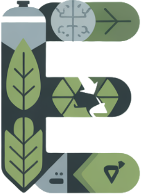

Environmental
 Fomentamos la
reutilización y recuperación de productos industriales siempre que sea posible.
Fomentamos la
reutilización y recuperación de productos industriales siempre que sea posible.- Coordinamos la gestión
responsable de residuos mediante centros autorizados.
- Optimizamos rutas
logísticas para reducir emisiones de transporte.
- Trabajamos con
almacenes certificados ADR y medioambientales.